Interface
.png)
.png)
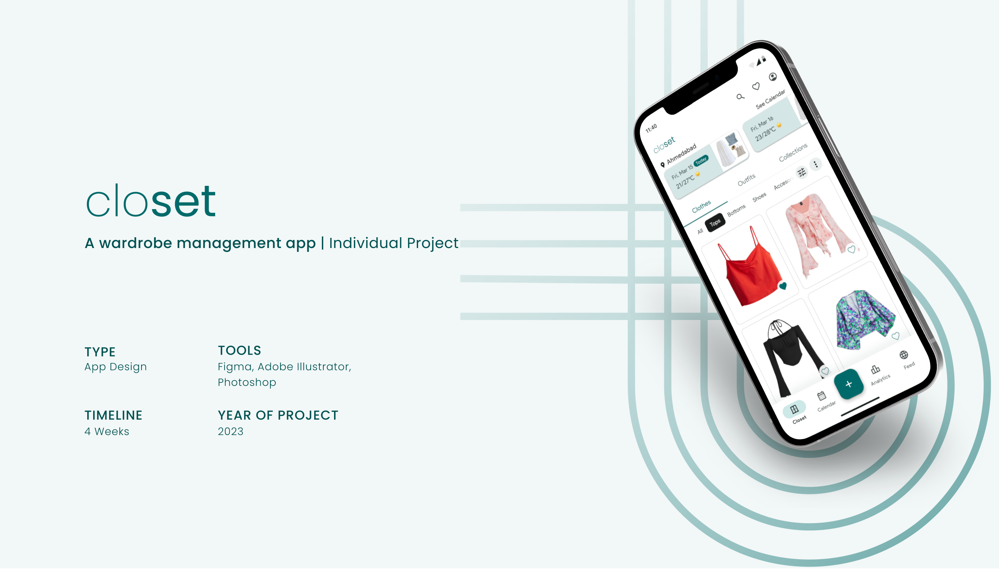
The Outfit Logging App enhances wardrobe management by streamlining outfit planning and clothing use. Users can upload and categorize their garments based on events, seasons, or preferences for more mindful outfit selection. Its analytics tool sheds light on wardrobe usage, identifying often-worn items and underutilized pieces. This helps maximise the use of existing clothes, reduces unnecessary purchases, and promotes sustainability. Whether for special events or daily wear, the app provides a seamless experience, fostering smarter wardrobe management and encouraging sustainable consumption habits.
A platform that simplifies wardrobe management by combining organisation, creativity, and community engagement. The app aims to:
This application is designed for:
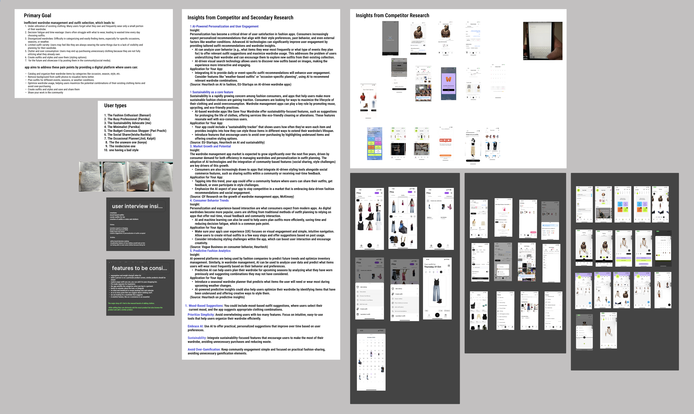
Primary and Secondary research was conducted which included user interviews, competitor analysis, industry blogs, existing user data analysis.
More inclination towards the app was observed if it had more offerings than just logging outfits. The user intended to derive more features from it. The user faced main problem in creating outfits and hence appreciated having an outfit creation feature.
She shared that every morning she would be indecisive on what to wear and almost ended up repeating outfits because of lack of visibility.
She was self aware and told that clicking picture and logging in each and every outfit would be a task to her and she would not be able follow through.
She shared that she always realises very late that here spendings on clothes have soared which led to compromises in her budget. She many a times bought things impulsively which she never wore.
Her personal style was deeply influenced by movies and TV series. She sought inspiration for creating her personal style.
Her being a doctor she selected clothes every morning according to the tasks she was going to get involved in.
He ended up wearing the same kind of clothes each day. He suggested that he would greatly benefit from a feature where he could visualise his clothes.
As he lived in the UK, he chose his clothes everyday based on the weather.
His body underwent lot of fluctuations and hence he could not wear a major part of his wardrobe at a certain time period.
From the market research, particularly in depth user interviews, project goals were defined :
Integrating calendar and weather details in the app to make informed decisions
A platform where users can share styles and also draw inspiration would be highly beneficial in sorting personal style and receiving feedback
Providing additional features like creating outfits and styles would act benefit users in a holistic sense
Wardrobe analytics would help users keep track of all their clothes and where their style skews, as well as their spending habits and much more
Reduce drop offs, as a lot of user input is required
People have diverse ways of decision making while choosing clothes, so enabling that for each user, easing confusion
Google's Material Design system was incorporated as it was well researched, detailed and aligned well with the vision. Alongside this, modifications were made to the system as and when required.
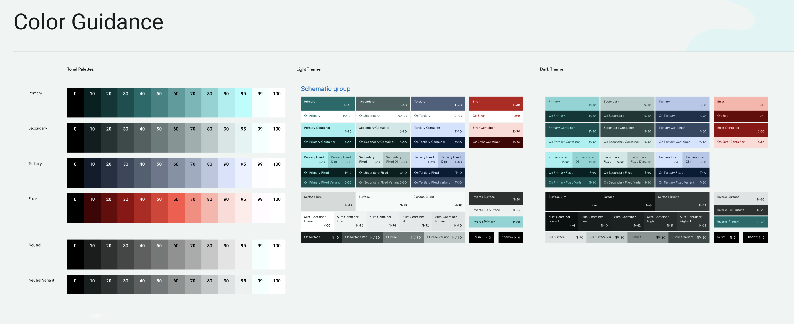
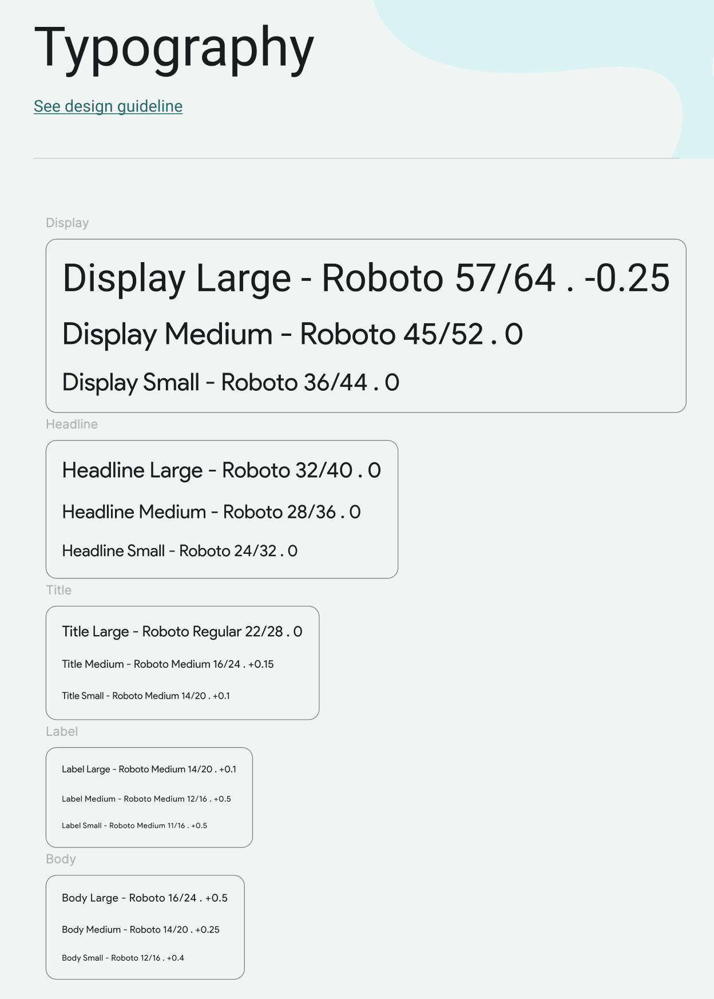
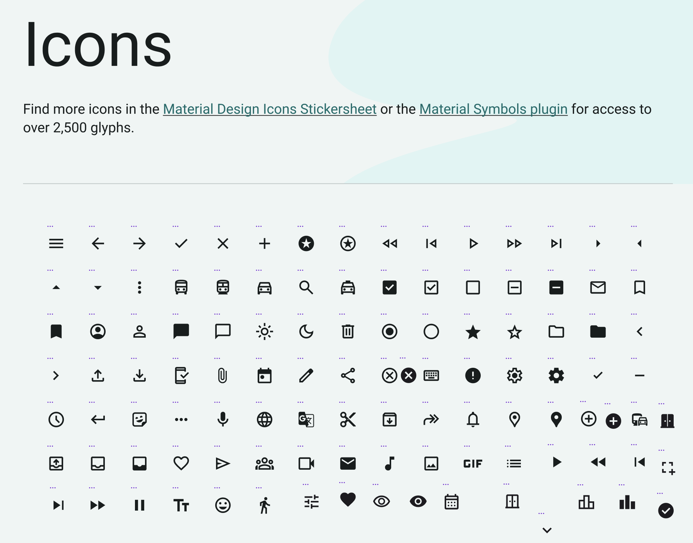
It is a repository of all clothes, outfits and collections.
The calendar notification of everyday dressing also shows up here.
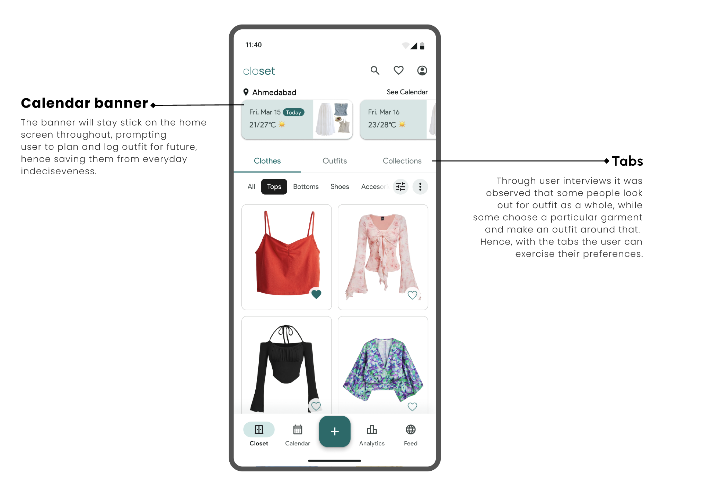
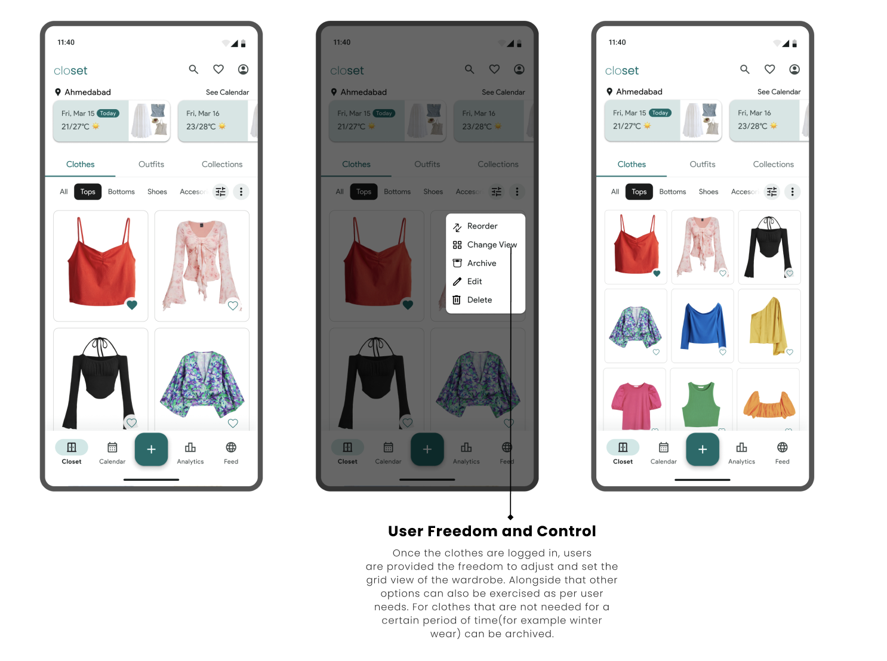
This screen encompasses all the possible details regarding a single item.
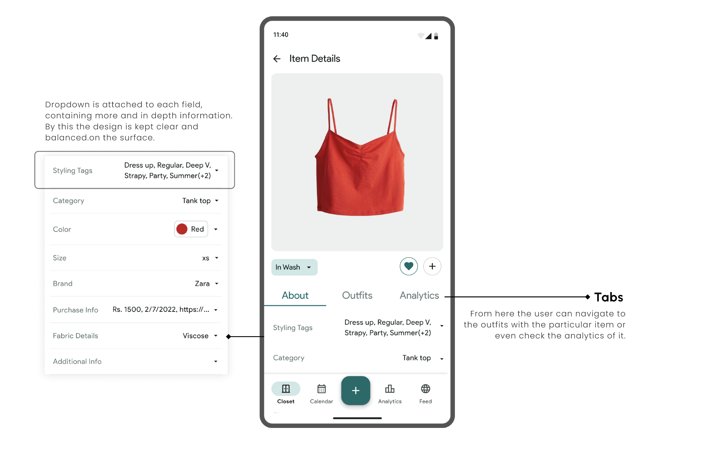
In the app's calendar feature, users can set up their outfits in advance for any day or event. This helps avoid the daily stress of deciding what to wear. On the chosen day, the app will send a reminder showing which outfit to wear, making it easy to get ready.
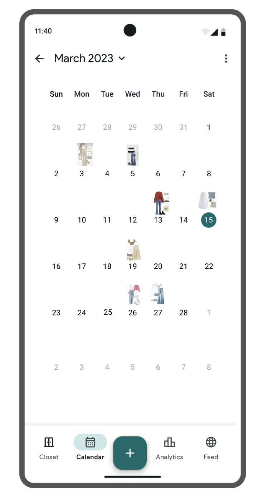
This feature provides users with both a comprehensive overview and detailed reports of their wardrobe, enabling them to make well-informed decisions about their purchases. Users can assess the quantity, type, and quality of their clothes, among other factors, to optimize their wardrobe choices effectively.
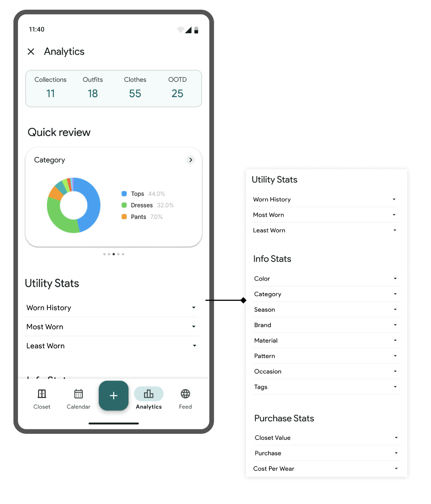
Users can follow content creators and also create content by posting their outfits and styles. They can browse the feed through various style categories.

Users can assemble outfits from individual garment pieces, save their creations, log them in the calendar, or share them with others. This feature eliminates the tedious task of physically trying on outfits to see how they look together, streamlining the outfit selection process.
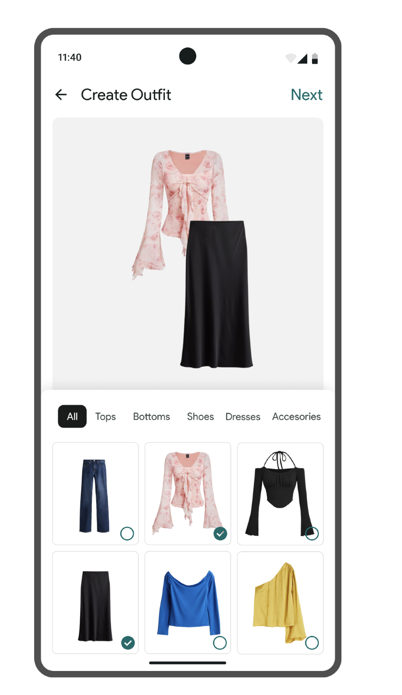
Through multiple user interviews it was observed that people tend to drop off the app due to the task of logging in every outfit and entering all details. To combat this, in this app one can add a garment in multiple and efficient ways like from the web or inbuilt library. Moreover the user can add images from across these tabs, rather than doing it one tab at a time.
For the details part, automated details would be added and user freedom would be given to add additional ones at their convenience.